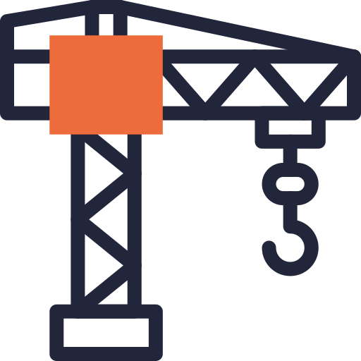

módulo 2
A MAIS ALTA TORRE COMEÇA DO CHÃO
um projeto do


Chegamos ao nosso segundo módulo, a mais alta torre começa no chão. E vamos resgatar três palavrinhas que você aprendeu no capítulo anterior: agente de mudança. Potente, né? E não é apenas na entonação e no som, é na prática mesmo...
Este é você agora, pronto(a) para colocar a mão na massa. Então, vamos refletir sobre esse importante papel de agente de mudança, pense aí sobre duas questões: O que você está mudando? E para onde você está conduzindo esta mudança?
É sobre a organização da sua estratégia de mudança, com a teoria da mudança, que falaremos nesse episódio.
A Transformação 2.0 vem aí, com entrevistas com Empreendedores e Empreendedoras Sociais de todo Brasil. No capítulo 3, a conversa foi com Denise Silva da Bruaca BR (MS). Ela entra no ar no dia 15/03/24 e você pode assisti-la no ícone dos vídeos.
No quarto capítulo / episódio da TransformAção – a Jornada do Empreendedor Social, o assunto agora é oportunidade empreendedora. Uma das principais habilidades que um empreendedor social precisa desenvolver é justamente saber identificar e explorar uma oportunidade no mercado que permita gerar receitas para sustentar o negócio e o impacto positivo.
Vamos saber um pouco mais sobre esse universo?
A Transformação 2.0 vem aí, com entrevistas com Empreendedores e Empreendedoras Sociais de todo Brasil. No quarto capítulo, a conversa foi com duas empreendedoras: Luísa Haddad e Marina Ferreira da Pé de Feijão (SP). Ela entra no ar no dia 22/03/24 e você pode assisti-la no ícone dos vídeos.

Chegamos ao quinto capítulo / episódio da nossa Jornada! Já passamos pelas etapas iniciais do conteúdo sobre Empreendedorismo Social: conceitos básicos, principais competências dos empreendedores sociais, estratégia para transformação e oportunidade empreendedora!
A partir daqui, com a oportunidade que possibilite a geração de receitas que sustentem as ações de impacto definida, é aí que entra a modelagem de negócios. Esse assunto é uma parte importante do processo de criação de um negócio de impacto socioambiental. É o que vai ajudar você a organizar e testar as ideias que estão na sua cabeça.
Vamos lá?!
A Transformação 2.0 vem aí, com entrevistas com Empreendedores e Empreendedoras Sociais de todo Brasil. No capítulo 5, a conversa foi com Simony César da Super Nina (PE). Ela entra no ar no dia 29/03/24 e você pode assisti-la no ícone dos vídeos.

Olá! Chegamos na metade da Jornada! E no capítulo/episódio 6, vamos explorar um assunto um pouco mais complexo, mas super importante para Empreendedores Sociais: a formatação jurídica no negócio!
Neste ponto, você já aprendeu algumas ferramentas para tirar sua ideia do papel, contribuindo para transformar positivamente uma realidade social ou ambiental que chamou a sua atenção. Em algum momento da sua trajetória, você precisará se tornar oficialmente uma pessoa jurídica, com CNPJ e tudo mais...
“Bora” começar?!
A Transformação 2.0 vem aí, com entrevistas com Empreendedores e Empreendedoras Sociais de todo Brasil. No sexto capítulo, foram duas conversas – uma com Victor Freiberg do Clube Social Pertence e do Instituto Pertence (RS); e a outra com Camila Mazzer da Advocacia de Impacto (SP). Elas entram no ar no dia 05 e 12/04/24 (respectivamente) e você pode assisti-las no ícone dos vídeos.
Achou que tinha terminado o Módulo 2? Ainda não… Chegamos com um episódio extra para que você possa exercitar as ferramentas que vimos: a Teoria da Mudança (episódio 3); a identificação da Oportunidade de Mercado (episódio 4); a elaboração do Modelo C (episódio 5); e a definição dos aspectos relacionados à Formatação Jurídica do Empreendimento Social (episódio 6). Nesse episódio extra, você conhecerá o caso da Viviane (que poderia ser real), praticando a “construção da sua torre”, com os seus pezinhos bem no chão... Assim, ficará mais fácil para você, entender como tirar da cabeça, colocar no papel e tomar decisões para colocar em prática o seu Negócio de Impacto positivo. Vamos lá?
A Transformação 2.0 vem aí, com entrevistas com Empreendedores e Empreendedoras Sociais de todo Brasil. No capítulo Extra, a conversa foi com Carlos Waldemar da Hand Talk (AL). Ela entra no ar no dia 24/05/24 e você pode assisti-la no ícone dos vídeos.
 e-book
e-book